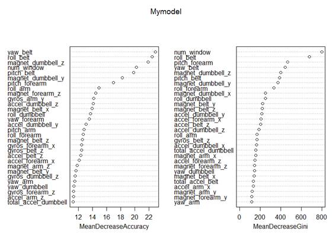
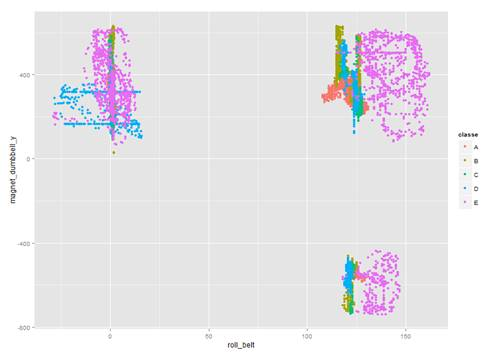
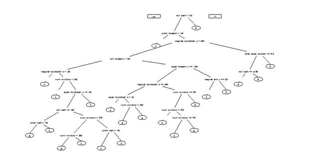

Practical Machine Learning
Assignment: Prediction Assignment Write-up
The data has been downloaded from the links presented in the assignment. I load the data and then take a close look at the data and the classes’ field, denoting the miscellaneous NA, #DIV/0!, and empty fields as NA.
R commands:
setwd("D:/PML") # or any directory of your choice
Mytrainingset <- read.csv("pml-training.csv", na.strings = c("NA", "#DIV/0!", ""))
Mytestingset <- read.csv("pml-testing.csv", na.strings = c("NA", "#DIV/0!", ""))
str(Mytrainingset, list.len=18)
Outputs:
'data.frame': 19622 obs. of 160 variables:
$ X : int 1 2 3 4 5 6 7 8 9 10 ...
$ user_name : Factor w/ 6 levels "adelmo","carlitos",..: 2 2 2 2 2 2 2 2 2 2 ...
$ raw_timestamp_part_1 : int 1323084231 1323084231 1323084231 1323084232 1323084232 1323084232 1323084232 1323084232 1323084232 1323084232 ...
$ raw_timestamp_part_2 : int 788290 808298 820366 120339 196328 304277 368296 440390 484323 484434 ...
$ cvtd_timestamp : Factor w/ 20 levels "02/12/2011 13:32",..: 9 9 9 9 9 9 9 9 9 9 ...
$ new_window : Factor w/ 2 levels "no","yes": 1 1 1 1 1 1 1 1 1 1 ...
$ num_window : int 11 11 11 12 12 12 12 12 12 12 ...
$ roll_belt : num 1.41 1.41 1.42 1.48 1.48 1.45 1.42 1.42 1.43 1.45 ...
$ pitch_belt : num 8.07 8.07 8.07 8.05 8.07 8.06 8.09 8.13 8.16 8.17 ...
$ yaw_belt : num -94.4 -94.4 -94.4 -94.4 -94.4 -94.4 -94.4 -94.4 -94.4 -94.4 ...
$ total_accel_belt : int 3 3 3 3 3 3 3 3 3 3 ...
$ kurtosis_roll_belt : num NA NA NA NA NA NA NA NA NA NA ...
$ kurtosis_picth_belt : num NA NA NA NA NA NA NA NA NA NA ...
$ kurtosis_yaw_belt : logi NA NA NA NA NA NA ...
$ skewness_roll_belt : num NA NA NA NA NA NA NA NA NA NA ...
$ skewness_roll_belt.1 : num NA NA NA NA NA NA NA NA NA NA ...
$ skewness_yaw_belt : logi NA NA NA NA NA NA ...
$ max_roll_belt : num NA NA NA NA NA NA NA NA NA NA ...
[list output truncated]
R commands:
table(Mytrainingset$classe)
prop.table(table(Mytrainingset$user_name, training$classe), 1)
prop.table(table(Mytrainingset$classe))
Outputs:
A B C D E 5580 3797 3422 3216 3607
adelmo 0.2993320 0.1993834 0.1927030 0.1323227 0.1762590 carlitos 0.2679949 0.2217224 0.1584190 0.1561697 0.1956941 charles 0.2542421 0.2106900 0.1524321 0.1815611 0.2010747 eurico 0.2817590 0.1928339 0.1592834 0.1895765 0.1765472 jeremy 0.3459730 0.1437390 0.1916520 0.1534392 0.1651969 pedro 0.2452107 0.1934866 0.1911877 0.1796935 0.1904215
A B C D E 0.2843747 0.1935073 0.1743961 0.1638977 0.1838243 I am going to perform data clean-up by removing columns 1 to 6, which are only for reference purposes. I also need to delete columns that are NA.
Before I can go further with the data analysis tasks, I am going to split the training set into two set for the purpose of cross validation. I am going to randomly subsample 60% of the dataset for training and 40% for testing. These sections will be then used for evaluation and accuracy measurement.
R commands:
trainingset <- Mytrainingset[, 7:160]
testingset <- Mytestingset[, 7:160]
is_data <- apply(!is.na(trainingset), 2, sum) > 19621
trainingset <- trainingset[, is_data]
testingset <- testingset[, is_data]
library(caret)
set.seed(3141592)
train <- createDataPartition(y=trainingset$classe, p=0.60, list=FALSE)
trainf <- trainingset[train,]
trains <- trainingset[-train,]
dim(trainf)
dim(trains)
Outputs:
[1] 11776 54[1] 7846 54
The trainf has been the training set which includes 11776 observations, and trains has been the testing set that includes 7846 observations The trains would be utilized for accuracy measurements.
R Commands:
nzv_cols <- nearZeroVar(trainf)
if(length(nzv_cols) > 0) {
trainf <- trainf[, -nzv_cols]
trains <- trains[, -nzv_cols]
}
dim(trainf)
Outputs:
[1] 11776 54[1] 7846 54R Commands:
library(randomForest)
set.seed(3141592)
Mymodel <- randomForest(classe~., data=trainf, importance=TRUE, ntree=100)
varImpPlot(Mymodel)
Outputs:

R Commands:
crl = cor(trainf[,c("yaw_belt","roll_belt","num_window","pitch_belt","magnet_dumbbell_z","magnet_dumbbell_y","pitch_forearm","accel_dumbbell_y","roll_arm","roll_forearm")])
diag(crl) <- 0
which(abs(crl)>0.75, arr.ind=TRUE)
cor(trainf$roll_belt, trainf$yaw_belt)
qplot(roll_belt, magnet_dumbbell_y, colour=classe, data=trainf)
Outputs:
row colroll_belt 2 1yaw_belt 1 2 [1] 0.8152349

R Commands:
library(rpart.plot)
Mymodel <- rpart(classe~., data=trainf, method="class")
prp(Mymodel)
Output:
I am going to make the model now and measure the accuracy of the prediction model.
R Commands:
set.seed(3141592)
Mymodel <- randomForest(classe~., data=trainf, importance=TRUE, ntree=100)
varImpPlot(Mymodel)
crl = cor(trainf[,c("yaw_belt","roll_belt","num_window","pitch_belt","magnet_dumbbell_z","magnet_dumbbell_y","pitch_forearm","accel_dumbbell_y","roll_arm","roll_forearm")])
diag(crl) <- 0
which(abs(crl)>0.75, arr.ind=TRUE)
cor(trainf$roll_belt, trainf$yaw_belt)
qplot(roll_belt, magnet_dumbbell_y, colour=classe, data=trainf)
set.seed(3141592)
Mymodel <- train(classe~roll_belt+num_window+pitch_belt+magnet_dumbbell_y+magnet_dumbbell_z+pitch_forearm+accel_dumbbell_y+roll_arm+roll_forearm,data=trainf, method="rf", trControl=trainControl(method="cv",number=2), prox=TRUE, verbose=TRUE, allowParallel=TRUE)
saveRDS(Mymodel, "predictionmodel.Rds")
Model <- readRDS("predictionmodel.Rds")
predictions <- predict(Model, newdata=trains)
confusionMat <- confusionMatrix(predictions, trains$classe)
confusionMat
missClass = function(values, predicted) {
sum(predicted != values) / length(values)
}
outS_errorRate = missClass(trains$classe, predictions)
outS_errorRate
Outputs:
Confusion Matrix and Statistics ReferencePrediction A B C D E A 2231 2 0 0 0 B 1 1512 0 0 1 C 0 3 1368 6 1 D 0 1 0 1280 3 E 0 0 0 0 1437 Overall Statistics Accuracy : 0.9977 95% CI : (0.9964, 0.9986) No Information Rate : 0.2845 P-Value [Acc > NIR] : < 2.2e-16 Kappa : 0.9971 Mcnemar's Test P-Value : NA Statistics by Class: Class: A Class: B Class: C Class: D Class: E Sensitivity 0.9996 0.9960 1.0000 0.9953 0.9965 Specificity 0.9996 0.9997 0.9985 0.9994 1.0000 Pos Pred Value 0.9991 0.9987 0.9927 0.9969 1.0000 Neg Pred Value 0.9998 0.9991 1.0000 0.9991 0.9992 Prevalence 0.2845 0.1935 0.1744 0.1639 0.1838 Detection Rate 0.2843 0.1927 0.1744 0.1631 0.1832 Detection Prevalence 0.2846 0.1930 0.1756 0.1637 0.1832 Balanced Accuracy 0.9996 0.9979 0.9992 0.9974 0.9983 [1] 0.002294163
As you can see, I got 99.77% accuracy. The out-of-sample error rate has been 0.229%.
The assignment has been very useful to me in the sense of practical machine learning techniques, and it helped much to investigate machine learning algorithms and strategies using R programming language.